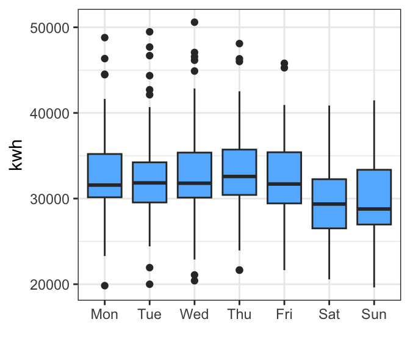
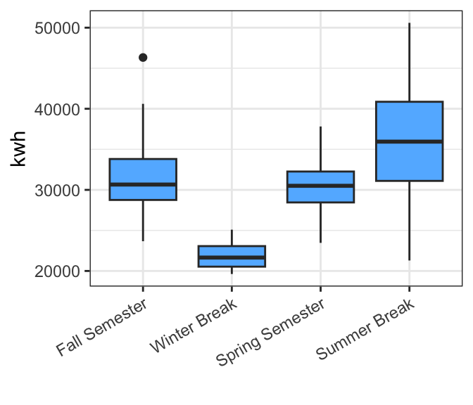
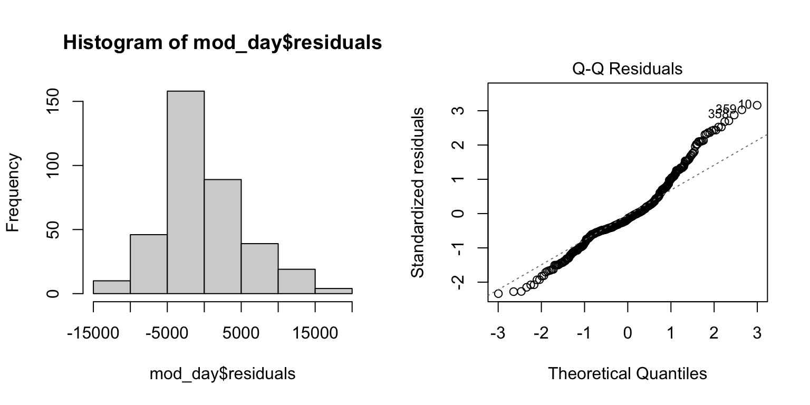
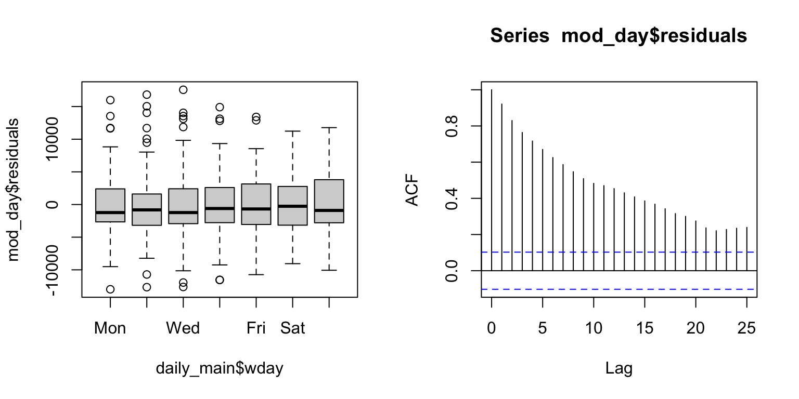
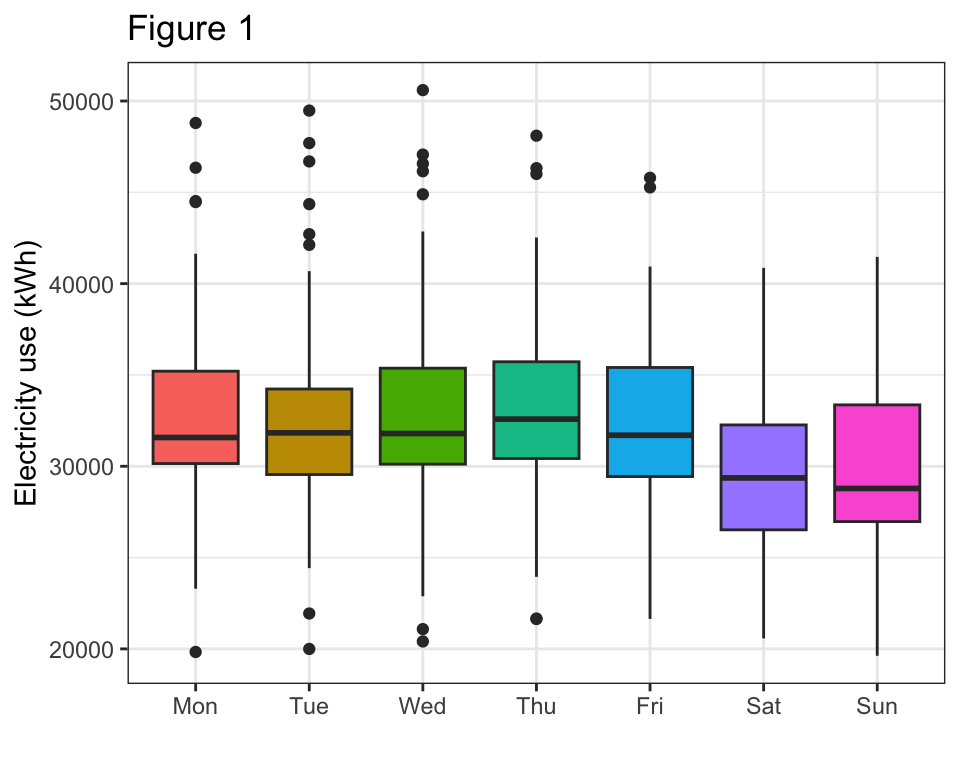
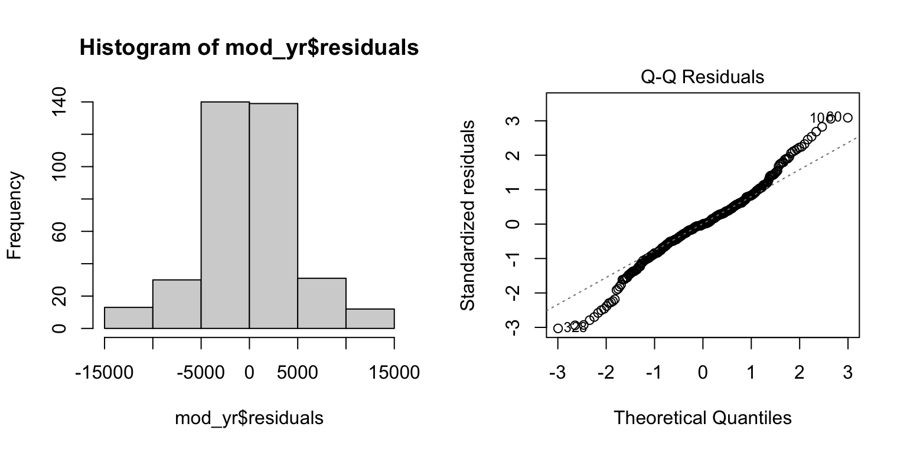
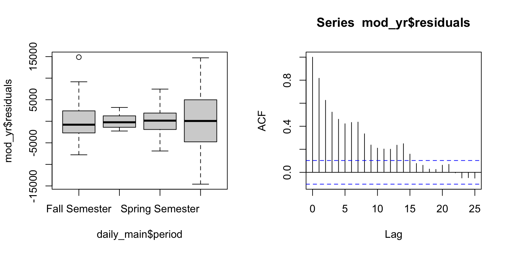
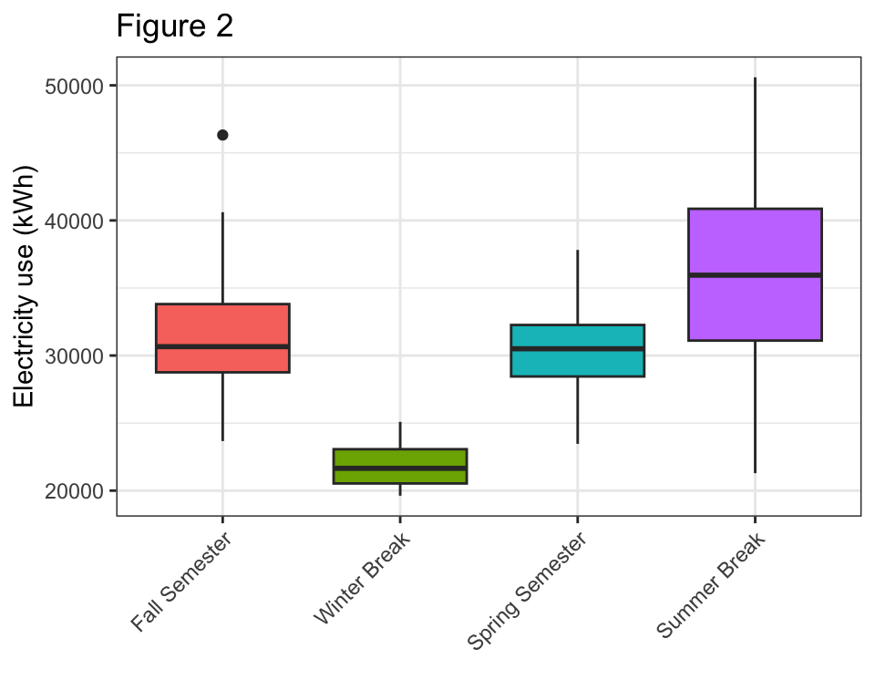

Last updated: 2026-03-26
Checks: 6 1
Knit directory: dickinson_power/
This reproducible R Markdown analysis was created with workflowr (version 1.7.2). The Checks tab describes the reproducibility checks that were applied when the results were created. The Past versions tab lists the development history.
The R Markdown is untracked by Git. To know which version of the R
Markdown file created these results, you’ll want to first commit it to
the Git repo. If you’re still working on the analysis, you can ignore
this warning. When you’re finished, you can run
wflow_publish to commit the R Markdown file and build the
HTML.
Great job! The global environment was empty. Objects defined in the global environment can affect the analysis in your R Markdown file in unknown ways. For reproduciblity it’s best to always run the code in an empty environment.
The command set.seed(20260107) was run prior to running
the code in the R Markdown file. Setting a seed ensures that any results
that rely on randomness, e.g. subsampling or permutations, are
reproducible.
Great job! Recording the operating system, R version, and package versions is critical for reproducibility.
Nice! There were no cached chunks for this analysis, so you can be confident that you successfully produced the results during this run.
Great job! Using relative paths to the files within your workflowr project makes it easier to run your code on other machines.
Great! You are using Git for version control. Tracking code development and connecting the code version to the results is critical for reproducibility.
The results in this page were generated with repository version f13922e. See the Past versions tab to see a history of the changes made to the R Markdown and HTML files.
Note that you need to be careful to ensure that all relevant files for
the analysis have been committed to Git prior to generating the results
(you can use wflow_publish or
wflow_git_commit). workflowr only checks the R Markdown
file, but you know if there are other scripts or data files that it
depends on. Below is the status of the Git repository when the results
were generated:
Ignored files:
Ignored: .DS_Store
Ignored: .Rhistory
Ignored: .Rproj.user/
Ignored: analysis/.DS_Store
Ignored: analysis/.Rhistory
Ignored: analysis_to-fix/.DS_Store
Ignored: data/.DS_Store
Ignored: data/FY25 Main Meter Data.xlsx
Ignored: data/building_list_FY25_updated.xlsx
Ignored: data/graph_data_life_exp.csv
Ignored: data/housing_counts.csv
Ignored: keys/.DS_Store
Ignored: output/annual_kwh.csv
Ignored: output/building_check.csv
Ignored: output/building_check.xlsx
Ignored: output/daily_kwh.csv
Ignored: output/kwh_academic_2026-03-16.csv
Ignored: output/kwh_academic_2026-03-17.csv
Ignored: output/kwh_academic_2026-03-18.csv
Ignored: output/kwh_academic_2026-03-22.csv
Ignored: output/kwh_academic_2026-03-23.csv
Ignored: output/kwh_academic_2026-03-25.csv
Ignored: output/kwh_annual.csv
Ignored: output/kwh_annual_2026-03-04.csv
Ignored: output/kwh_annual_2026-03-12.csv
Ignored: output/kwh_annual_2026-03-16.csv
Ignored: output/kwh_annual_2026-03-17.csv
Ignored: output/kwh_annual_2026-03-18.csv
Ignored: output/kwh_annual_2026-03-22.csv
Ignored: output/kwh_annual_2026-03-23.csv
Ignored: output/kwh_annual_2026-03-25.csv
Ignored: output/kwh_annual_20260225.csv
Ignored: output/kwh_annual_20260226.csv
Ignored: output/kwh_daily.csv
Ignored: output/kwh_daily_2026-03-04.csv
Ignored: output/kwh_daily_2026-03-12.csv
Ignored: output/kwh_daily_2026-03-16.csv
Ignored: output/kwh_daily_2026-03-17.csv
Ignored: output/kwh_daily_2026-03-18.csv
Ignored: output/kwh_daily_2026-03-22.csv
Ignored: output/kwh_daily_2026-03-23.csv
Ignored: output/kwh_daily_2026-03-25.csv
Ignored: output/kwh_daily_20260225.csv
Ignored: output/kwh_daily_20260226.csv
Ignored: output/kwh_main_annual.csv
Ignored: output/kwh_main_daily.csv
Untracked files:
Untracked: analysis/main_meter_anova.Rmd
Note that any generated files, e.g. HTML, png, CSS, etc., are not included in this status report because it is ok for generated content to have uncommitted changes.
There are no past versions. Publish this analysis with
wflow_publish() to start tracking its development.
What is the relationship between electricity use and time of week or year for buildings on the main meter?
The below analysis provides an example of how to use ANOVA to shed light on this question.
library(tidyverse)
daily <- read.csv("./output/kwh_daily_2026-03-23.csv", strip.white = TRUE)
daily_main <- daily %>%
filter(NAME == "Main Meter") %>%
mutate(date = ymd(date), # convert date to date object
wday = wday(date, label = TRUE)) # extract day of the week
str(daily_main)'data.frame': 365 obs. of 11 variables:
$ type : chr "Main Meter" "Main Meter" "Main Meter" "Main Meter" ...
$ meter : chr "Main Meter - Total" "Main Meter - Total" "Main Meter - Total" "Main Meter - Total" ...
$ NAME : chr "Main Meter" "Main Meter" "Main Meter" "Main Meter" ...
$ days_perc: num 100 100 100 100 100 100 100 100 100 100 ...
$ sqft : int 1119435 1119435 1119435 1119435 1119435 1119435 1119435 1119435 1119435 1119435 ...
$ occupants: num NA NA NA NA NA NA NA NA NA NA ...
$ period : chr "Summer Break" "Summer Break" "Summer Break" "Summer Break" ...
$ date : Date, format: "2024-07-01" "2024-07-02" ...
$ kwh : num 33919 35412 38561 42526 45794 ...
$ ave_temp : int 69 73 78 81 84 86 84 84 86 87 ...
$ wday : Ord.factor w/ 7 levels "Sun"<"Mon"<"Tue"<..: 2 3 4 5 6 7 1 2 3 4 ...# Weekday is already a factor ordered from Sunday to Saturday
# For ANOVA, it's a good idea to convert period to a factor, too
# This code converts period from character to factor and puts the time periods in chronological order
daily_main$period <- factor(daily_main$period,
levels = c("Fall Semester","Winter Break",
"Spring Semester", "Summer Break"))
# Reorganize days of the week slightly so weekdays are together + remove ordering
# For ANOVA, we want to treat weekday as a factor without order
daily_main$wday <- factor(daily_main$wday,
levels = c("Mon","Tue","Wed","Thu","Fri","Sat","Sun"),
ordered = FALSE)
# check again
str(daily_main)'data.frame': 365 obs. of 11 variables:
$ type : chr "Main Meter" "Main Meter" "Main Meter" "Main Meter" ...
$ meter : chr "Main Meter - Total" "Main Meter - Total" "Main Meter - Total" "Main Meter - Total" ...
$ NAME : chr "Main Meter" "Main Meter" "Main Meter" "Main Meter" ...
$ days_perc: num 100 100 100 100 100 100 100 100 100 100 ...
$ sqft : int 1119435 1119435 1119435 1119435 1119435 1119435 1119435 1119435 1119435 1119435 ...
$ occupants: num NA NA NA NA NA NA NA NA NA NA ...
$ period : Factor w/ 4 levels "Fall Semester",..: 4 4 4 4 4 4 4 4 4 4 ...
$ date : Date, format: "2024-07-01" "2024-07-02" ...
$ kwh : num 33919 35412 38561 42526 45794 ...
$ ave_temp : int 69 73 78 81 84 86 84 84 86 87 ...
$ wday : Factor w/ 7 levels "Mon","Tue","Wed",..: 1 2 3 4 5 6 7 1 2 3 ...Let’s start by looking at our data. For now we will do some quick-and-dirty graphs using ggplot. Since we are now interested in categorical variables, we will use a simple boxplot to look at patterns in the data.
The first boxplot seems to show a slightly elevated electricity use during the week compared to the weekends, but the pattern does not look very strong. The weekdays also appear to have a bit more variability in electricity use, with more outliers than the weekends. Since the main meter tracks use in a mix of buildings with different activities in them (classrooms, residences, etc.) it makes sense that the signal for day of the week appears pretty weak.
The second boxplot shows that typical electricity use during the fall and spring semesters is pretty similar (both median and spread). Electricity use in summer appears to be a a bit elevated and typical use during winter break appears considerably lower. The variation in electricity use looks lowest in the winter and highest in the summer. This overall patterns makes sense in light of what we’ve learned so far - electricity is more involved in cooling than heating, so the summer is elevated over spring/fall semesters. We also know that facilities adjusts the buildings to use less electricity when nobody is on campus over winter break.
# electricity x day of week
ggplot(daily_main, aes(x = wday, y = kwh)) +
geom_boxplot(fill = "steelblue1") +
theme_bw() + labs(x = "")
# electricity x time of year
ggplot(daily_main, aes(x = period, y = kwh)) +
geom_boxplot(fill = "steelblue1") +
theme_bw() + labs(x = "") +
theme(axis.text.x = element_text(angle = 30, hjust = 1)) # rotate labels for readability
Now we will fit a model to investigate the influence of day of the week on electricity use…
# equivalent model using lm()
mod_day <- lm(formula = kwh ~ wday,
data = daily_main)par(mfrow = c(1, 2)) # This code puts two plots in the same window
hist(mod_day$residuals) # Histogram of residuals
plot(mod_day, which = 2) # Quantile plot
boxplot(mod_day$residuals ~ daily_main$wday) # Examine variance across levels of X
acf(mod_day$residuals) # Assess dependence between successive observations
Similar to linear regression, we can unpack each part of this code. The intercept here represents the mean electricity use on Mondays, the first level in our categorical variable. The coefficients for the other days represent the average difference between them and electricity use on Mondays. For example, electricity use on the weekends appears to be about 3100 kWh less per day than on Mondays. The P values next to the individual coefficients tell us that electricity use on Saturday and Sunday is significantly different from Monday (P < 0.001), whereas there are no significant differences between Mondays and the other weekdays (P > 0.05).
Looking at the bottom of the output, we can see that day of the week is significantly related to electricity use (P < 0.001), but does not explain very much variation (R2 = 0.05).
summary(mod_day) # Examine model terms + outcomes
Call:
lm(formula = kwh ~ wday, data = daily_main)
Residuals:
Min 1Q Median 3Q Max
-12977.7 -2946.0 -914.7 2501.7 17567.7
Coefficients:
Estimate Std. Error t value Pr(>|t|)
(Intercept) 32808.9 771.1 42.546 < 2e-16 ***
wdayTue -157.8 1095.8 -0.144 0.88556
wdayWed 220.2 1095.8 0.201 0.84084
wdayThu 383.7 1095.8 0.350 0.72643
wdayFri -427.0 1095.8 -0.390 0.69698
wdaySat -3179.4 1095.8 -2.902 0.00394 **
wdaySun -3117.4 1095.8 -2.845 0.00470 **
---
Signif. codes: 0 '***' 0.001 '**' 0.01 '*' 0.05 '.' 0.1 ' ' 1
Residual standard error: 5614 on 358 degrees of freedom
Multiple R-squared: 0.06311, Adjusted R-squared: 0.0474
F-statistic: 4.019 on 6 and 358 DF, p-value: 0.0006545# which days are different?
TukeyHSD(aov(mod_day)) Tukey multiple comparisons of means
95% family-wise confidence level
Fit: aov(formula = mod_day)
$wday
diff lwr upr p adj
Tue-Mon -157.82874 -3407.026 3091.36848 0.9999992
Wed-Mon 220.21742 -3028.980 3469.41463 0.9999944
Thu-Mon 383.69434 -2865.503 3632.89155 0.9998523
Fri-Mon -427.04412 -3676.241 2822.15309 0.9997246
Sat-Mon -3179.42874 -6428.626 69.76848 0.0596943
Sun-Mon -3117.35181 -6366.549 131.84540 0.0695995
Wed-Tue 378.04615 -2886.587 3642.67907 0.9998683
Thu-Tue 541.52308 -2723.110 3806.15599 0.9989498
Fri-Tue -269.21538 -3533.848 2995.41753 0.9999822
Sat-Tue -3021.60000 -6286.233 243.03292 0.0904776
Sun-Tue -2959.52308 -6224.156 305.10984 0.1042532
Thu-Wed 163.47692 -3101.156 3428.10984 0.9999991
Fri-Wed -647.26154 -3911.894 2617.37138 0.9971342
Sat-Wed -3399.64615 -6664.279 -135.01324 0.0350595
Sun-Wed -3337.56923 -6602.202 -72.93632 0.0413664
Fri-Thu -810.73846 -4075.371 2453.89445 0.9902273
Sat-Thu -3563.12308 -6827.756 -298.49016 0.0222821
Sun-Thu -3501.04615 -6765.679 -236.41324 0.0265459
Sat-Fri -2752.38462 -6017.018 512.24830 0.1623701
Sun-Fri -2690.30769 -5954.941 574.32522 0.1837374
Sun-Sat 62.07692 -3202.556 3326.70984 1.0000000ggplot(daily_main, aes(x = wday, y = kwh, fill = wday)) +
geom_boxplot() +
theme_bw() +
theme(legend.position = "none") +
labs(x = "", y = "Electricity use (kWh)",
title = "Figure 1")
Okay, now let’s try and fit a model to see if time of the year influences electricity use…
mod_yr <- lm(kwh ~ period, data = daily_main)par(mfrow = c(1, 2)) # This code put two plots in the same window
hist(mod_yr$residuals) # Histogram of residuals
plot(mod_yr, which = 2) # Quantile plot
boxplot(mod_yr$residuals ~ daily_main$period) # boxplot of residuals x period
acf(mod_yr$residuals) # Assess dependence between successive observations
The intercept here represents the mean electricity use during fall semester, the first level in our categorical variable. The coefficients for the other periods represent the average difference between them and electricity use in fall. For example, electricity use during winter break appears to be about 9563 kWh less per day than in fall. The P values next to the individual coefficients tell us that electricity use during winter and summer break is significantly different from fall semester (P < 0.001), whereas electricity use in fall and spring are marginally different (P 0 0.08).
Looking at the bottom of the output, we can see that period of the year is significantly related to electricity use (P < 0.001), and explains about a third of the variation in electricity use (R2 = 0.29).
summary(mod_yr) # Examine model terms + outcomes
Call:
lm(formula = kwh ~ period, data = daily_main)
Residuals:
Min 1Q Median 3Q Max
-14585.4 -2468.3 -37.1 2622.1 14874.1
Coefficients:
Estimate Std. Error t value Pr(>|t|)
(Intercept) 31448.3 453.0 69.429 < 2e-16 ***
periodWinter Break -9562.7 1291.1 -7.407 9.25e-13 ***
periodSpring Semester -1092.0 620.6 -1.760 0.0793 .
periodSummer Break 4429.9 654.2 6.772 5.17e-11 ***
---
Signif. codes: 0 '***' 0.001 '**' 0.01 '*' 0.05 '.' 0.1 ' ' 1
Residual standard error: 4836 on 361 degrees of freedom
Multiple R-squared: 0.2989, Adjusted R-squared: 0.293
F-statistic: 51.3 on 3 and 361 DF, p-value: < 2.2e-16# let's see if using a Welch's ANOVA gives a similar result
oneway.test(kwh ~ period, data = daily_main, var.equal = FALSE)
One-way analysis of means (not assuming equal variances)
data: kwh and period
F = 155.09, num df = 3.000, denom df = 85.444, p-value < 2.2e-16# which periods are different?
TukeyHSD(aov(mod_yr)) Tukey multiple comparisons of means
95% family-wise confidence level
Fit: aov(formula = mod_yr)
$period
diff lwr upr p adj
Winter Break-Fall Semester -9562.737 -12895.172 -6230.302 0.0000000
Spring Semester-Fall Semester -1092.048 -2693.718 509.623 0.2945798
Summer Break-Fall Semester 4429.857 2741.449 6118.265 0.0000000
Spring Semester-Winter Break 8470.689 5163.590 11777.788 0.0000000
Summer Break-Winter Break 13992.594 10642.628 17342.561 0.0000000
Summer Break-Spring Semester 5521.905 3884.071 7159.740 0.0000000ggplot(daily_main, aes(x = period, y = kwh, fill = period)) +
geom_boxplot() +
theme_bw() +
theme(legend.position = "none",
axis.text.x = element_text(angle = 45, hjust = 1)) +
labs(x = "", y = "Electricity use (kWh)",
title = "Figure 2")
The model for day of the week appeared to fit most of the assumptions of the model fairly well. We saw a small but statistically significant effect, with electricity use about 10% lower on weekends compared to weekdays. That said, there was quite a lot of variability in electricity use within days of the week and a low R2, suggesting that other factors may be more important in explaining electricity use patterns. This is also seen in the significant temporal autocorrelation in the data compared to the model last week examining the effect of temperature.
The model for period in the year appeared to fit some assumptions but likely violated equality of variance. That is problematic given that we also have unequal numbers of days across periods (i.e. unequal sample size). That said, there appeared to be a strong signal in the data, with time of year explaining around a third of the variation in electricity use. Electricity use in winter was about 30% lower than in fall semester and in summer was about 14% higher than in fall semester. The significant effect remained even when using a Welch’s ANOVA that did not assume equal variance. Similar to the day of the week analysis, there is significant dependency in the data through time.
For our future modeling efforts, both of these variables appear to have value in explaining patterns of electricity use, although integrating them into a final model will require grappling with violations of the assumptions.
sessionInfo()R version 4.5.2 (2025-10-31)
Platform: x86_64-apple-darwin20
Running under: macOS Ventura 13.7.8
Matrix products: default
BLAS: /Library/Frameworks/R.framework/Versions/4.5-x86_64/Resources/lib/libRblas.0.dylib
LAPACK: /Library/Frameworks/R.framework/Versions/4.5-x86_64/Resources/lib/libRlapack.dylib; LAPACK version 3.12.1
locale:
[1] en_US.UTF-8/en_US.UTF-8/en_US.UTF-8/C/en_US.UTF-8/en_US.UTF-8
time zone: America/New_York
tzcode source: internal
attached base packages:
[1] stats graphics grDevices utils datasets methods base
other attached packages:
[1] lubridate_1.9.5 forcats_1.0.1 stringr_1.6.0 dplyr_1.2.0
[5] purrr_1.2.1 readr_2.2.0 tidyr_1.3.2 tibble_3.3.1
[9] ggplot2_4.0.2 tidyverse_2.0.0
loaded via a namespace (and not attached):
[1] sass_0.4.10 generics_0.1.4 stringi_1.8.7 hms_1.1.4
[5] digest_0.6.39 magrittr_2.0.4 timechange_0.4.0 evaluate_1.0.5
[9] grid_4.5.2 RColorBrewer_1.1-3 fastmap_1.2.0 rprojroot_2.1.1
[13] workflowr_1.7.2 jsonlite_2.0.0 promises_1.5.0 scales_1.4.0
[17] jquerylib_0.1.4 cli_3.6.5 rlang_1.1.7 withr_3.0.2
[21] cachem_1.1.0 yaml_2.3.12 otel_0.2.0 tools_4.5.2
[25] tzdb_0.5.0 httpuv_1.6.16 vctrs_0.7.1 R6_2.6.1
[29] lifecycle_1.0.5 git2r_0.36.2 fs_1.6.7 pkgconfig_2.0.3
[33] pillar_1.11.1 bslib_0.10.0 later_1.4.8 gtable_0.3.6
[37] glue_1.8.0 Rcpp_1.1.1 xfun_0.56 tidyselect_1.2.1
[41] rstudioapi_0.18.0 knitr_1.51 farver_2.1.2 htmltools_0.5.9
[45] labeling_0.4.3 rmarkdown_2.30 compiler_4.5.2 S7_0.2.1